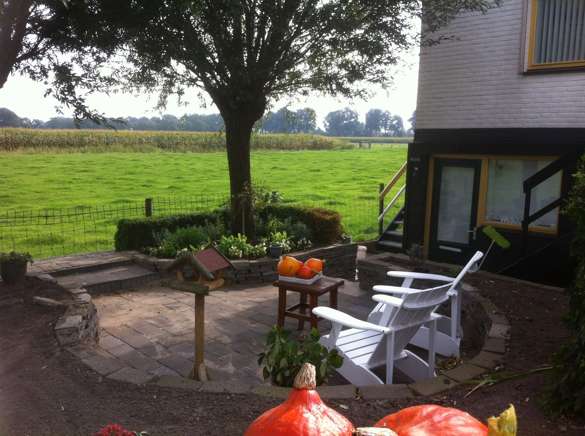
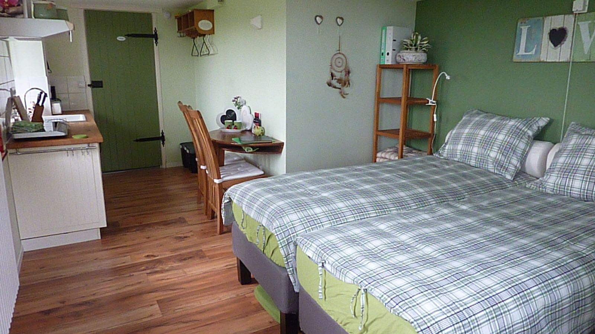
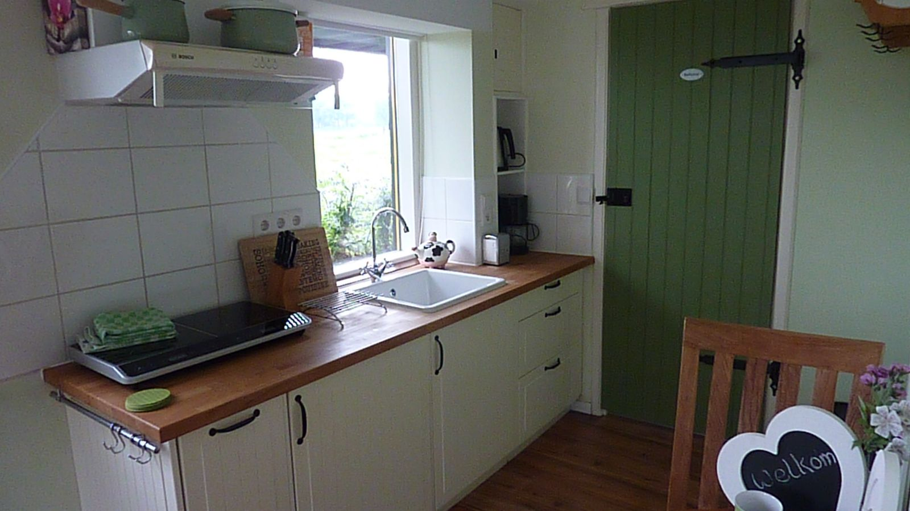
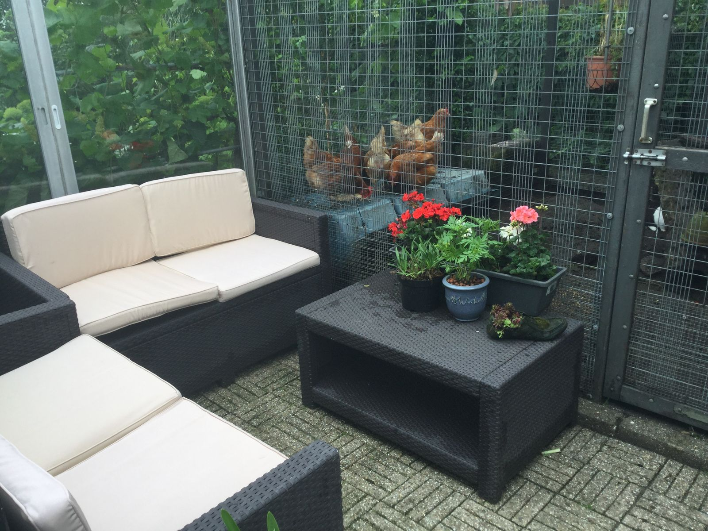
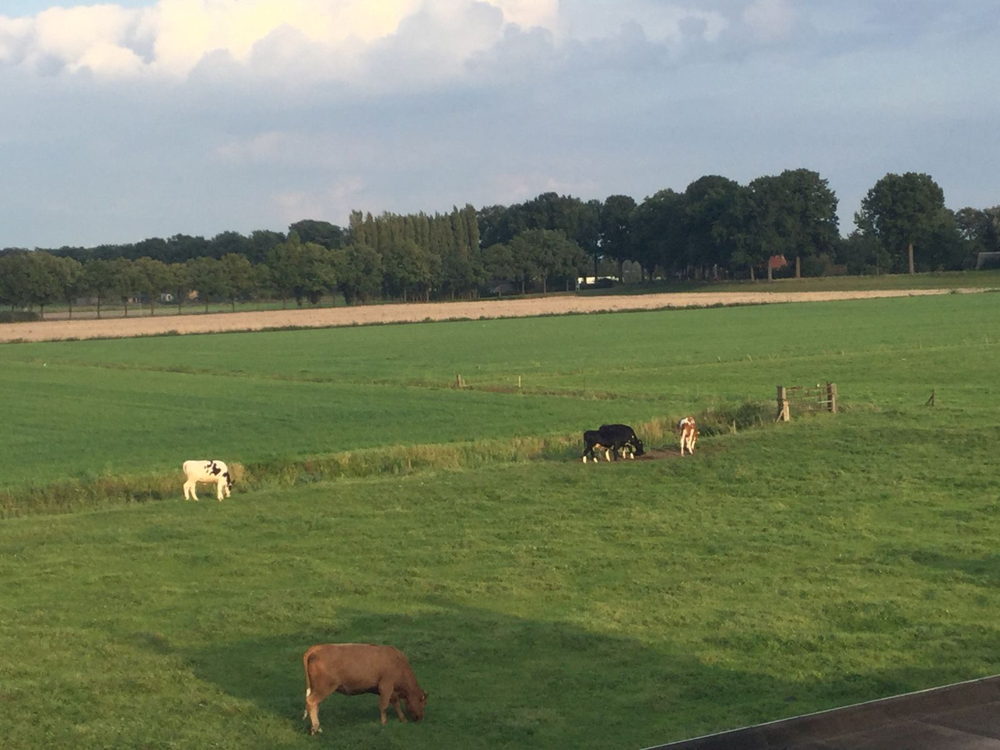
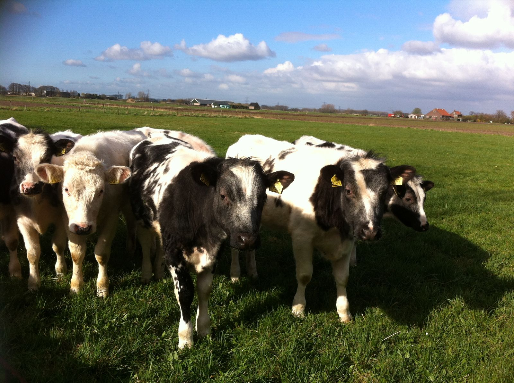
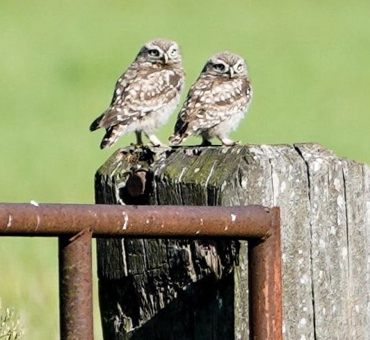
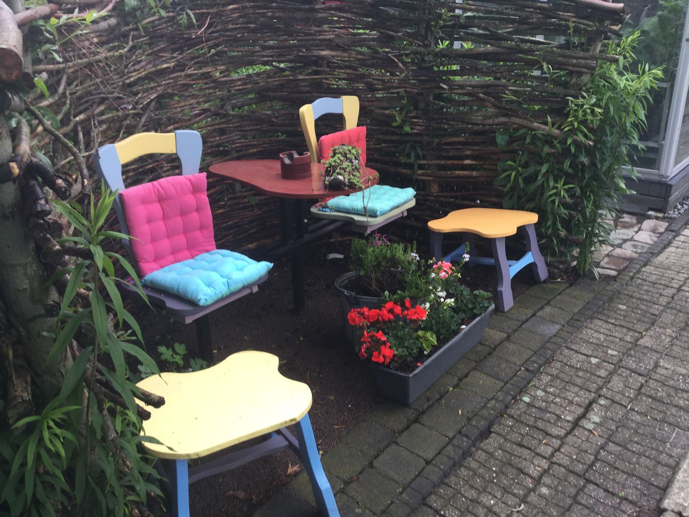
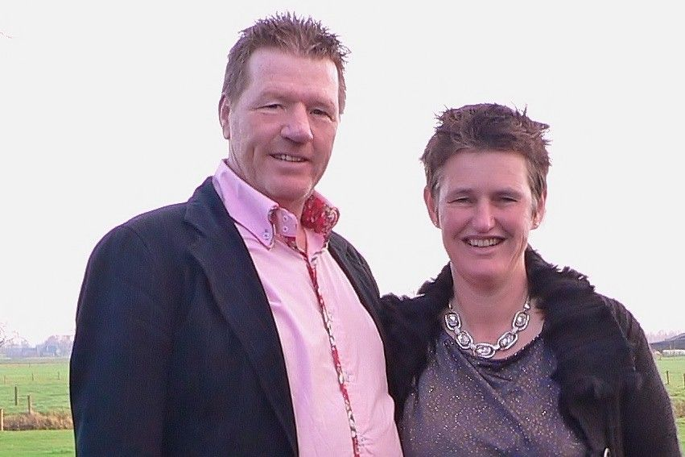
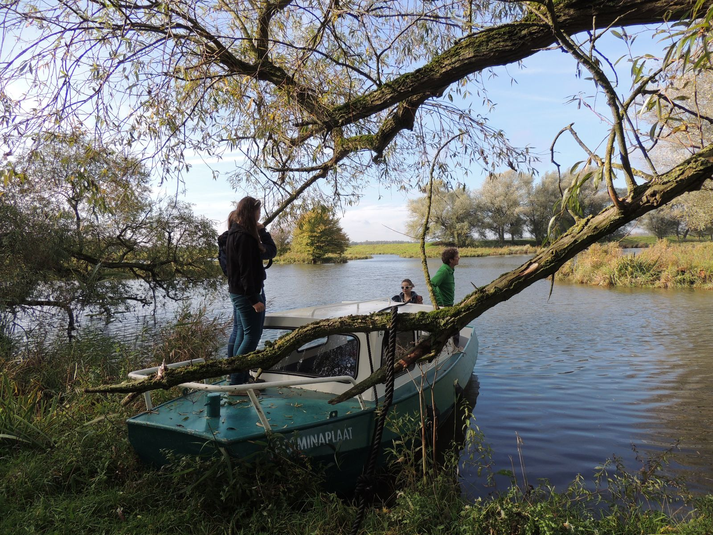

Rust, ruimte en vrijheid bij de Biesbosch
Een complete studio met eigen ingang en terras, met uitzicht over de weilanden. Tussen Nationaal Park De Biesbosch (7 km) en Breda (10 km).



Het Souterrain
Complete studio voor 2 personen
Een compleet ingerichte studio met eigen ingang, terras, tuin, badkamer en keuken. Vanuit de kamer heeft u een prachtige kiek over de weilanden.
- Eigen ingang en terras
- Eigen keuken en badkamer
- 2 boxspringbedden
- Airco via warmtepomp
Ontbijt € 15 per persoon per nacht. Vraag ook naar onze weekend- en midweekaanbieding.
Alles over de studioWakker worden in het weiland
Aan alle kanten vrij uitzicht. In de zomer komen de koeien kijken wie er logeert.



Wat onze gasten schrijven
op bedandbreakfast.nl
Het was heerlijk vertoeven hier, een goed bed, lekker ontbijt en erg leuk die nieuwsgierige koeien.
JoséGastenboek, augustus 2025
Heerlijke overnachting na een mooie lange fietstocht vanuit Utrecht. Alles wat je nodig hebt + een prachtig uitzicht.
Harm en KirstenGastenboek, augustus 2025
De dagen geopend door gegak van de vele overvliegende ganzen
Jos en RiaGastenboek, september 2025
En dan verwend worden met een geweldig heerlijk ontbijt

Ontbijt uit eigen tuin
We serveren zoveel mogelijk biologische, streek- en eigen producten. De jam komt uit onze bio-moestuin, de eieren van onze eigen kippen, en in het seizoen staan er frambozen, aardbeien en pruimen uit de tuin op tafel.
Zin om mee te eten? Diner bij uw gastheer en gastvrouw kan voor € 20 per persoon, in overleg.

Over ons
"Geboren uit een droom, gebouwd met liefde, toewijding en inzet."
Wij zijn Antoon en Monique. Ons huis is een oud molenaarshuisje op een dijkje, dat Antoon in 1999 kocht en jarenlang zelf heeft verbouwd. Vanaf het terras zagen we ieder seizoen andere vogels, en we dachten: hoe leuk is het om anderen ook van deze plek te laten genieten?
In 2012 gingen we open. Als gastheer van Nationaal Park De Biesbosch geven we u graag tips voor de mooiste routes.

Fietsen, wandelen en varen
Vanuit de B&B fietst of wandelt u zo de Biesbosch in. In de studio liggen knooppuntenkaarten en routes die we speciaal voor onze gasten hebben uitgezet.
Goed om te weten
Reserveren
Bel ons of stuur uw aanvraag met de gewenste data. Wij laten zo snel mogelijk weten of de studio vrij is.
Liever even bellen?
Antoon en Monique vertellen u graag wanneer de studio vrij is.